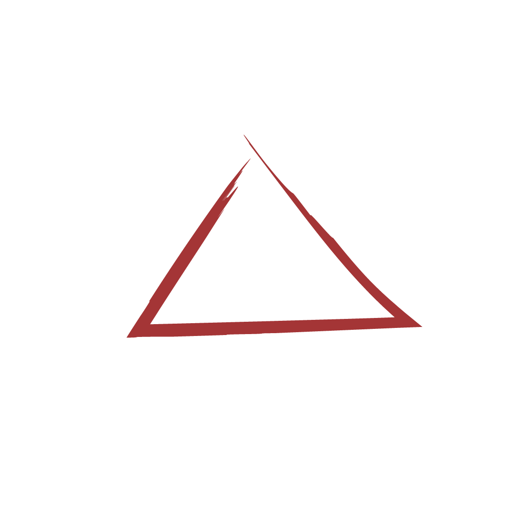
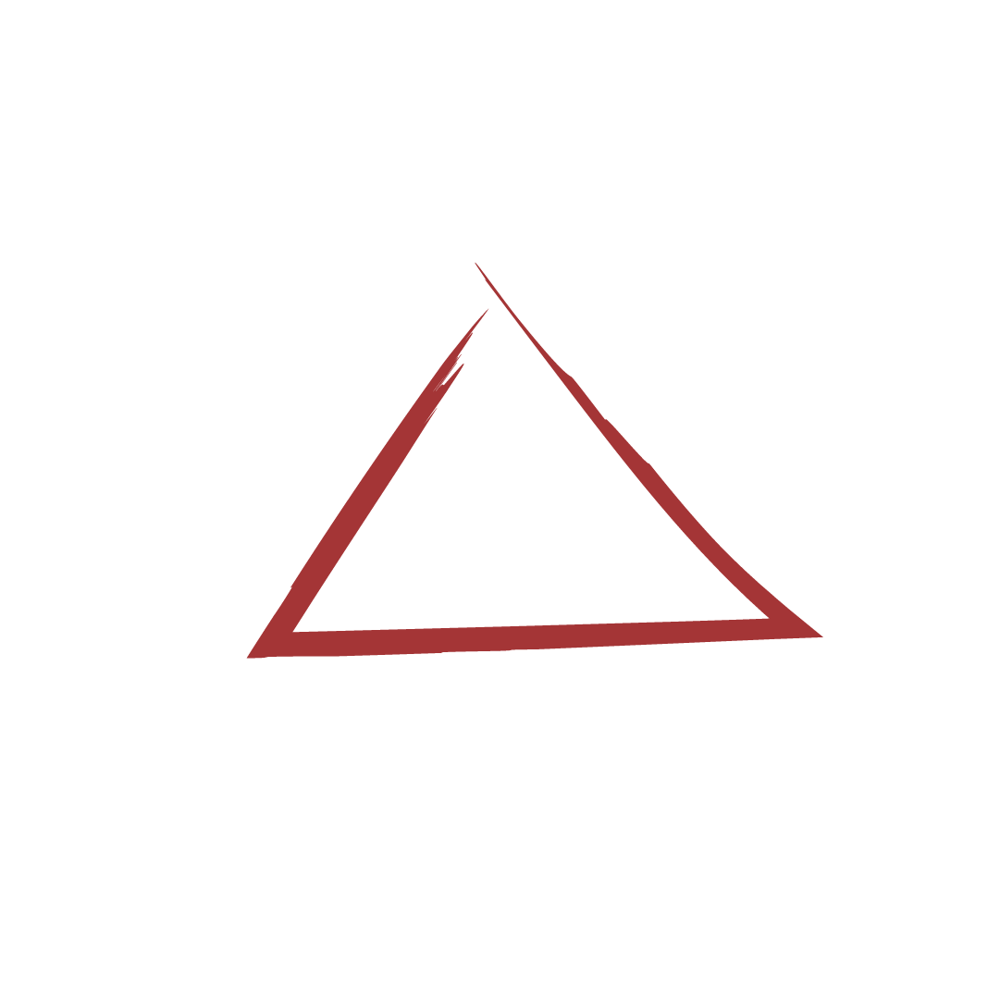

はやぶさの軌跡
2003
05/09
打ち上げ
鹿児島県宇宙空間観測所より打ち上げ。
この日に「はやぶさ」と命名されました。
2005
09/12
イトカワ到着
到着といっても、
イトカワから20kmの位置を回っています。
まずは長旅お疲れ様です！
2003
10/01
リアクションホイール故障
宇宙機の姿勢を安定させるには、
3つの方向の回転をコントロールしなければなりません。
実はイトカワ到着前に1つ故障していた
この
リアクションホイール。
続いて2つめも故障し、
1つの方向の回転しかコントロールできなくなってしまいました。
2005
11/10
ミネルバ分離
はやぶさにくっついていた小型ローバー
「ミネルバ」。
本当はイトカワの地上近くではやぶさから分離して
イトカワの地面を探索するはずだったものの、
分離のタイミングがズレたことにより地面に届かず
宇宙のかなたに行ってしまいました。
悲しさは残りますが、ミネルバが捉えた
はやぶさの写真が残っています。
2005
11/19
降下チャレンジ
はやぶさの着陸チャレンジ1回目。
順調にイトカワに近づいていたものの、
「着地した」という信号がはやぶさから来なかったため、
緊急で離陸の命令を出してしまいました。
後から調べると実際は30分ほど着陸していたそう。
2005
11/26
降下成功
２度目は無事に着陸成功。
本当は、小さな弾丸を地面に打ち込んで
飛び散った砂を採取する予定でしたが、
その弾丸は発射できずに終わりました。
その代わりに空気中のイトカワの微粒子は入っていました
世界初のサンプル採取成功です！
2005
12/19
通信が途絶える
はやぶさ最大の危機。
はやぶさからの信号が一切来なくなりました。
実はこの少し前に燃料が大幅に漏れていたことも発覚。
地球への帰還は絶望的です。
2006
01/23
交信復活
なんと、はやぶさからの信号がやってきました！
しかし信号は途切れ途切れ。まさに「溺れている」状態。
太陽電池から供給されるはずの電力もほとんど空...。
2006
03/06
新ルート決定
はやぶさを太陽に向けながらゆっくり電力を回復させつつ、
地球に帰るための新たなルートを決定しました。
当初の予定より3年長くなりました
2009
11/04
イオンエンジン故障
はやぶさが進むために必要なエンジン。
4つが搭載されていましたが、
実はすでに不調や故障で3基は動いていませんでした。
そしてついに4つめのエンジンも故障。
不調で休んでいた2つのエンジンを組み合わせてなんとか1基分に...。
2010
06/13
地球へ帰還
帰還が絶望的とされたはやぶさ。ついに地球に帰還します。
イトカワの微粒子が入ったカプセルを地上に落とし、
本体は大気圏で燃え尽きました。
その様子は特大流れ星。
カプセルはパラシュートでオーストラリアのウーメラ砂漠に落下。
無事に回収されました。


 
→ aboutイトカワ
→ aboutサンプルリターン

→ aboutイトカワ
→ aboutサンプルリターン